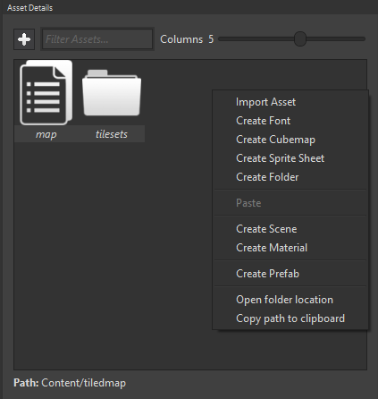
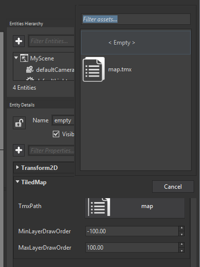
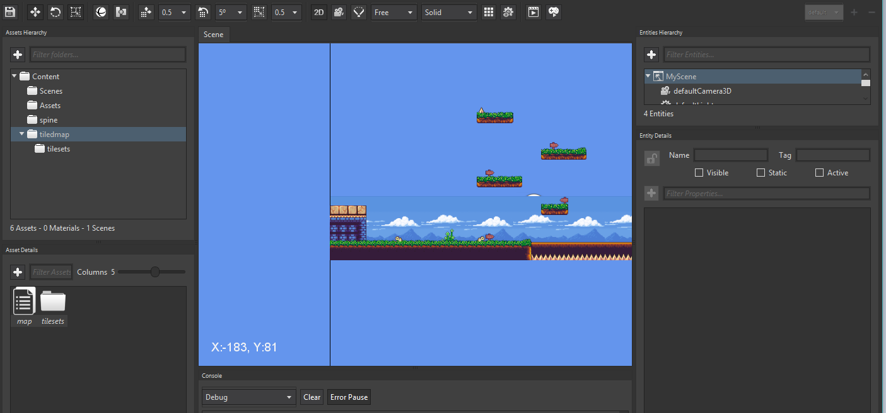

Goal
Within this recipe we will learn how to consume a tile map exported with Tiled Map Editor.
Hands-on
Tiled is a great tool to create maps for your games using tiles distributed in a grid. It is very useful and popular in 2D games to design game levels. You can get more information here.
 The terrain tool screenshot.
The terrain tool screenshot.
In order to use its outputs with Wave Engine, we must add the TMX file to the Wave Project from Wave Visual Editor, along with the tilesets images.
NOTE: Within this recipe we are taking the assets from this sample, more exactly from here.
Using Wave Visual Editor
Open or create a WaveEngine project in Wave Visual Editor and import, using the same directory hierarchy, all Tiled files:

Wave Engine contains a component called TiledMap which makes really easy to include Tiled maps. Once it points to the TMX file, a new entity hierarchy is automatically generated to represent the different layers in the map.
Create a new Entity and insert a Transform2D and a TiledMap components. Select this entity and update the TmxPath property to point the desired TMX file.

Finally, the entity must be look like this:

With Visual Studio (for Windows or Mac)
Open or create a WaveEngine project in Wave Visual Editor and import the Tiled assets (see past chapter: "Using Wave Visual Editor" from this recipe):
First we need to add the Nuget WaveEngine.TiledMap reference.
Building an entity:
var map = new Entity()
.AddComponent(new Transform2D())
.AddComponent(new TiledMap(WaveContent.Assets.map_tmx));
EntityManager.Add(map);
Wrap-up
We have learned how to import a map generated with Tiled Map Editor in Wave Engine.